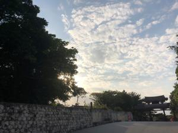
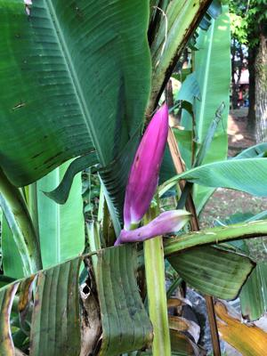
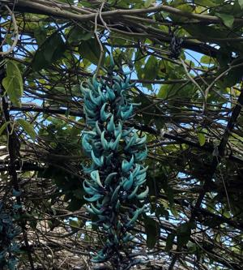

うるがいの話 ある日
最新: ユニゾン【うるがいの話 ある日】とは 一日だけのプログです
『うるがいの話』の最新一日だけのプログで、通信料が少なく経済的だ。カニの画像をクリックすると全ての日付が載る『うるがいの話』サイトを表示します
|
|
【うるがいの話】 うるがい(ｳﾙｶﾞｲ urugai)とは、『もずくがに』の名前でとても大きくなります。 |
|---|---|
|
|
【カミマヤーの話】 猫のことを方言でマヤーといいます。カミマヤー（kamimayaa）とは、神の猫のことです。 |
|
【たながぁの音楽】 たながぁ（ﾀﾅｶﾞｰtanagaa）とは手長えびのことで、何種類かあり大きいのは車 エビぐらいになります。 |

|
【ぶながぁの話】 ぶながー(bunagaa)とは、赤い髪の毛、赤い身体、そして身長は１ｍ２０ｃｍ ぐらい、川の蟹を食べているの目撃された。場所は沖縄県国頭郡大宜味村のと ある村僕の隣近所に住んでいる爺さんから、聞いた話です。 |
|
|
【ギーマの話】 ギーマ(giima)とは、山原の里山に咲くスズランに似た、 花を付けます。実は食べられます、 気が付くと口の周りが紫になっています。 |
2022年02月28日 (月）ユニゾン
16:11
 

調律師のモノローグ『ピアノと平均律の謎』の本から
耳は非常にすぐれた識別能力をもつ道具だ。だから、いつでも欠陥を見つけだ
してしまう。そこのオクターヴがふらついてる、そこのユニゾンが鼻声みたい
だ。ここの音程を決め、そっちの和音をまたやりなおして、もう一度。永久に
ここにいることに なるのかしら？
お、出張のときいつもウエチさんが泊まっていたホテルユニゾ新橋の名前ジャ
ン！と思った。
検索yahoo!知恵袋でも
ユニゾって言葉の由来は？
異なる楽器が同じフレーズを演奏することをユニゾンといいますので
そこから来ていると思います。

残念、ユニゾンの意味は当たっているがホテルの会社の説明を見たら、
「ユニゾ／UNIZO」は、普遍的で世界に通用するオフィス空間・場
（UNIVERSAL+ZONE）の提供を目指す不動産事業と、独自のビジネスモデ
ルから生み出されるくつろぎの空間・場（UNIQUE+ZONE）の提供に努める
ホテル事業を二本柱とし、両輪で未来に向かって成長（UNITE+ZOOM）し
ていきたいという意味を表し ...
とのこと。病院からはまだ連絡が入ってこない。
１６時０３分 ビットコインの総資産 ￥１２、７０７↓